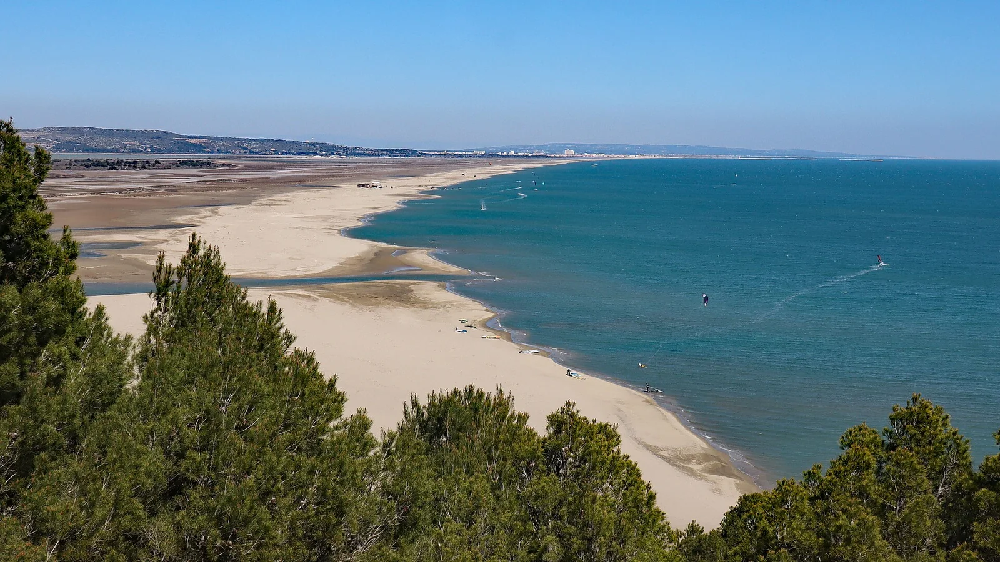

La Franqui
Leucate, France · kitesurf, windsurf

Spot phare du Languedoc balayé par la tramontane, théâtre du Mondial du Vent : kite et windsurf de haut niveau.
- Lieu
- Leucate, France
- Niveau
- Intermédiaire
- Activités
- kitesurf, windsurf
- Type d'eau
- Mer / océan
- Coordonnées
- 42.95, 3.04 (position approximative du secteur)
Dangers à connaître
- Tramontane offshore très puissante.
- Vent de terre : risque de dérive au large.
Le conseil d'Ocean Buddy
Vent offshore : ne pars jamais seul, reste près du bord.
Ouvrir dans Ocean Buddy Télécharger sur l'App Store
Source : Description historique Ocean Buddy · vérification externe en attente.